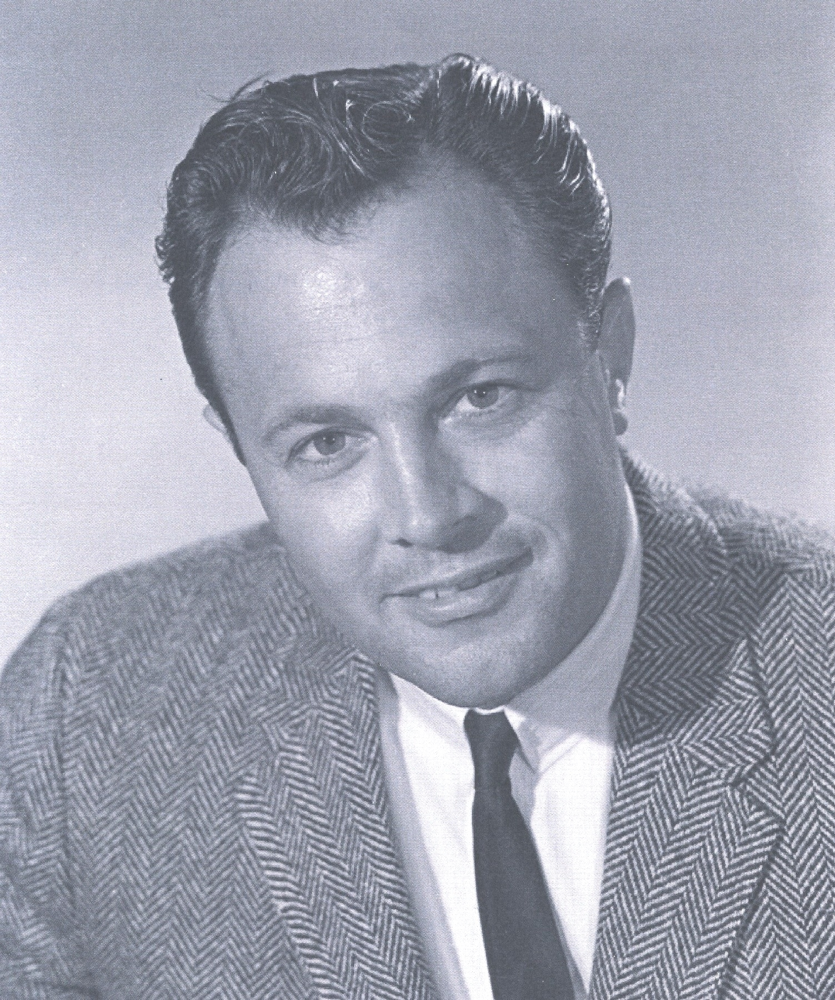

Ken Orsatti (Alfred Kendall)
Born Alfred Kendall Orsatti on January 31, 1932, Ken was Ernie Orsatti’s nephew. His father and two uncles ran the Orsatti Agency, according to the Los Angeles Times; Al’s family biography identifies Ken as his son. After earning a business administration degree from USC in 1956, he went to work as a production assistant at his uncle Vic’s Rorvic Productions.
He found his calling on the other side of the bargaining table. In 1960 he became a business representative for AFTRA, and in 1961 he moved to the Screen Actors Guild in the same role, as a theatrical business representative in Hollywood. He became Southwest regional director in 1966 and Hollywood executive director in 1971, also serving as assistant national executive director, until 1981.
From 1981 to 2000 he served as SAG’s national executive director and chief negotiator, the high point of a Guild career that ran nearly 40 years. Known for his easy demeanor, he believed the “whole idea of collective bargaining is to reach a deal.” Announcing his retirement to the national board in October 2000, he said: “It’s not easy to be leaving, but I’m leaving you as the strongest performers’ union in the world. I’m very proud of having been part of that achievement.” In 2001 he received the Ralph Morgan Award, the SAG Hollywood Division’s highest service honor, and the SAG Foundation established the Ken Orsatti Scholarship for Guild employees.
He died of pulmonary disease in West Hills, California, on August 31, 2010, at age 78. SAG president Ken Howard said he “will long be remembered for wholeheartedly working to protect the rights of our members.”
On the timeline
Ken Orsatti joins SAG
Ken Orsatti starts at the Screen Actors Guild as a theatrical business rep; Southwest regional director 1966; Hollywood exec director 1971–81.
Ken Orsatti: SAG National Executive Director
As national executive director from 1981 to 2000, Ken Orsatti was also SAG’s chief negotiator, brokering about 20 major contracts during a period of dramatic contract expansion and record-setting earnings for members. Facing studio negotiator Nick Counter through six TV and theatrical negotiations from 1983 to 1998, he reached a deal every time; the only strike of his tenure was the six-month commercials strike of 2000, in which John McGuire was the Guild’s chief negotiator. He led the campaigns that brought the advertising industry in the Guild’s branches, and stunt performers, into SAG, and he helped negotiate local and regional contracts that created work for thousands of members. He helped create the SAG Foundation in 1985 and later sat on its board. He was a trustee of the SAG-Producers Pension & Health Plans for more than 35 years and a vice president of the International Federation of Actors. When the SAG and AFTRA boards met jointly for the first time in 1995 and voted 128–8 for a merger plan, he called it “a tremendously important step toward merger,” adding: “Merger is essential for the future protection of performers’ and broadcasters’ rights.”
Rowbie Orsatti joins SAG
Rowbie Orsatti becomes a member of the Screen Actors Guild – the union Ken Orsatti led as national executive director from 1981 to 2000.
Sources: Orsatti family · variety.com · latimes.com · hollywoodreporter.com · televisionacademy.com